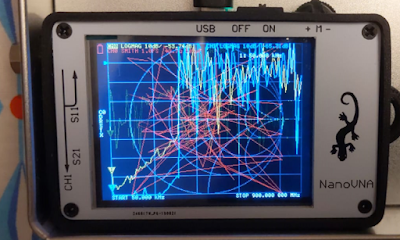
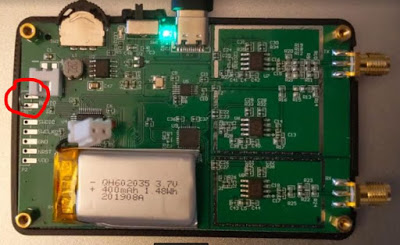

Some notes on the NanoVNA - The tiny, inexpensive Vector Network Analyzer.
A few months ago, I purchased the amazing
NanoVNA on ebay
for about 50 bucks. What an impressive work of engineering for such a ridiculously low price! Ok, admittedly the really cool stuff comes from the people that are working on open source software. That hardware would have much less value without the software,
When ordering a new VNA, pay attention to what you get and what you might need. Mine came with the essential 50 ohm load, open, and short SMA plugs, 2 SMA cables, a USB-C cable, and a tin box.
I didn't know it at the time (although probably not a surprise)... but there are a lot of imitations. ymmv. The only "official" one that I have since become aware of, is this
Nooelec kit
. Considering the time and hassle of ordering connectors that otherwise come included with this kit - I probably would have purchased it instead, had I known about it.
Here's mine in a EMI-protective tin (that normally should have the lid on when you are using it!) measuring a cheap LoRa antenna:
The tin box is much more than a carrying case! I drilled some holes in mine and used it as a protective shield. Measuring antenna characteristics with, say your computer just inches away will almost certainly cause interference and erroneous results.
I ended up paying nearly the same amount for a variety of adapters and connectors. There's an amazing variety available.
SMA Male to IPX ufl (e.g. the antenna adapter shown above), SMA to BNC (e.g. Oscilloscope probe), SMA to F-Type (e.g. cable TV), F-type coax male / F-type coax female and a variety of others
are things to consider - depending on the need.
It's probably a personality
disorder
quality attribute, but here are the adapters I ordered after I had my NanoVNA but realized I didn't have the right one on hand:
The little blue 3D-printed nut spinners were a cool gift. I had never used them, but certainly recommend them now! They are quite handy for tightening the SMA connectors,
A couple of key places for the NanoVNA user to be aware of:
Once you have a NanoVNA, unless you want to upgrade firmware - probably the only thing of interest (other than the documentation) - is the
NanoVNA Saver software
.
Calibration is important!
There's an excellent, easy-to-understand
sequence of pictures that illustrates the plugs, cables, and connections for each step of calibration. From the cho45 NanoVNA manual
:
Calibration should basically be performed whenever the frequency range to be measured is changed. If the error is corrected correctly, the calibration status display on the screen will Cn D R S T Xbe. n is the data number being loaded.
However, NanoVNA can complement the existing calibration information and display to some extent correct. This will happen if the frequency range is changed after loading the calibration data. At this time, the calibration status is displayed on the screen cn D R S T X. n is the data number being loaded.
- Reset current calibration state
CAL RESET - Connect the OPEN standard to the CH0 port
CAL CALIBRATE OPENand execute. - Connect the SHORT standard to the CH0 port
CAL CALIBRATE SHORTand execute. - Connect the LOAD standard to the CH0 port
CAL CALIBRATE LOADand execute. - Connect the LOAD standard to the CH0 and CH1 ports
CAL CALIBRATE ISOLNand execute. If there is only one load, the CH0 port can be left unconnected. - Connect the cables to the CH0 and CH1 ports, connect the cables with the through connectors,
CAL CALIBRATE THRUand execute. - Finish calibration and calculate error correction information
CAL CALIBRATE DONE - Specify the data number and save.
CAL CALIBRATE SAVE SAVE 0
* Each calibration data must be imported after the display is sufficiently stable.
Firmware notes:
One of the most important things that I learned during the upgrade process is that there are apparently TWO different types of firmware. The standard version and the "AA" (Antenna Analyzer) version. Upload the wrong firmware, and I saw this mess of squiggly lines on the screen:
|
 |
| Not the NanoVNA you want to see, |
This was the result of my compiled version off of GitHub. I was never able to get it to work. :/
Fortunately, one of the folks on the user groups posted some
useful files
that helped me recover.
When upgrading the firmware, DON'T FORGET THE JUMPER on the board. Yes, this is in upper case as even though it was listed in the instructions, I forgot that part and used Zadig the change the USB drivers BEFORE the jumper was in place. Don't do that.
In fact, I didn't need Zadig at all, erm, once the BOOT0 jumper was in place. For more info on the dfu-util and Zadig, see
Scott Hanselman's Blog on How to fix dfu-util, STM, WinUSB, Zadig, Bootloaders and other Firmware Flashing issues on Windows
.
The board should be powered on with the BOOT0 jumper in place. You can remove the jumper after turning on the power and before uploading the firmware. I've left the jumper in place, uploaded the firmware, then powered down and removed the jumper. It seemed to work just fine.
My BOOT0 jumper was in a completely different location (on a completely different board) as compared to the
one on the ttrftech docs
. Note my jumper was located under the batter LiPo connector:
|
 |
|
My NanoVNA with a temporary jumper at BOOT0 |
Note that more recent versions of the firmware have the ability to put the board into DFU mode. See the config menu option.
Windows (and WSL Linux users) can download the
dfu-util from SourceForce (too bad that site is such a haven for excessive ads). I used the 64 bit Version 0.9
.
Despite there being an apt-get version of dfu-util for WSL Ubuntu, I was not able to get that version to recognize the NanoVNA. Fortunately Windows apps can also be used in WSL. Don't forget the "./" for WSL.
./dfu-util.exe -d 0483:df11 -a 0 -s 0x08000000:leave -D build/ch.bin
More to come...
Copyright (c) gojimmypi all rights reserved. Blogger Image Move Cleaned: 5/3/2021 1:35:54 PM
{kind=link}
{kind=link}
{kind=link}
{kind=link}
{kind=link}